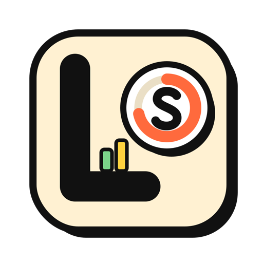
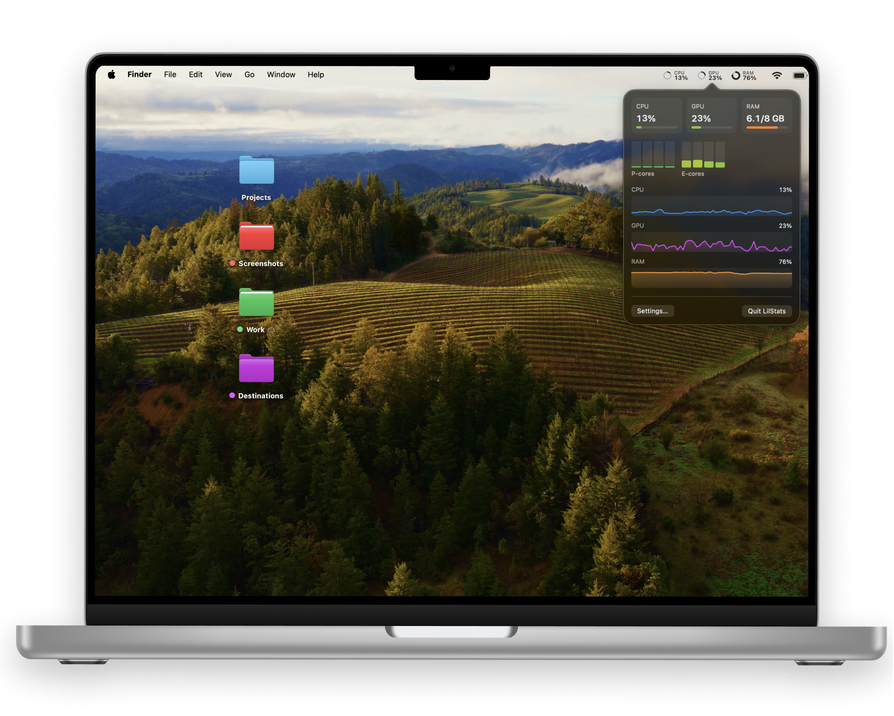

LilStats keeps CPU, GPU and RAM in your menu bar, drawn however you like — rings, bars, graphs, per-core meters or plain numbers. Click it for P‑cores, E‑cores and the last minute of history.
Showing Ring + % · try another style
Right next to Wi-Fi and the battery, where you'd look anyway. One click opens the details.

Every metric gets its own look. Pick one below and the menu bar up top switches to it.
Mono follows your menu bar like any system icon · Colored runs green → yellow → red with load
Everything you'd glance at, nothing you'd have to manage.
On Apple silicon, per-core bars split into performance and efficiency groups, so you can see which ones are doing the work.
Click the menu bar for big numbers, every core, and live graphs of the last 60 seconds. While it's open it updates every second.
Monochrome blends into the menu bar in light and dark mode. Colored shifts from green to yellow to red as things heat up.
Turn each metric on or off, reorder them, hide the labels, and check it all in a live preview on light and dark menu bars.
Update every 1, 2 or 5 seconds. Values glide between readings, and the animation pauses in Low Power Mode.
Fully sandboxed. No helper tool, no admin password, no permission prompts. It reads the same counters Activity Monitor does.
A system monitor shouldn't show up in its own numbers.
No. LilStats reads the CPU, memory and GPU counters macOS makes available to any app. No Accessibility, no Full Disk Access, no helper tool, no admin password.
On purpose. "Used" is app memory plus wired plus compressed, the same sum Activity Monitor shows as Memory Used. Files macOS is just caching don't count.
Yes. On Intel the per-core view shows one group of cores instead of P and E. Some older GPUs don't report utilization; if yours doesn't, GPU shows a dash instead of a made-up number.
It's built not to. Readings take a fraction of a millisecond, redraws only happen when something visibly changes, and everything stops while your display sleeps. Want it even calmer? Set the interval to 5 seconds.
None. LilStats has no account, no analytics, and no network connection. Your numbers stay on your Mac. See the privacy policy.